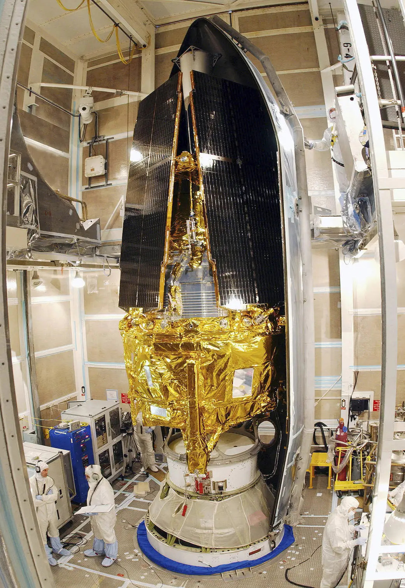
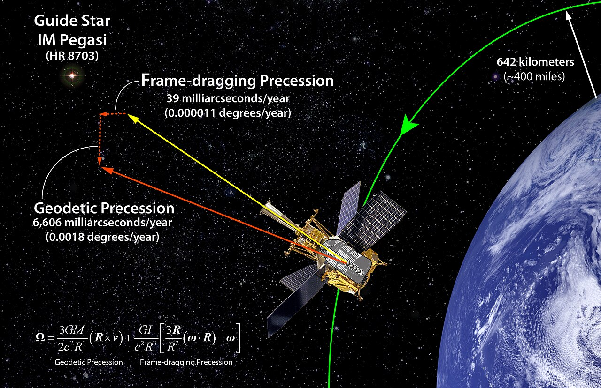
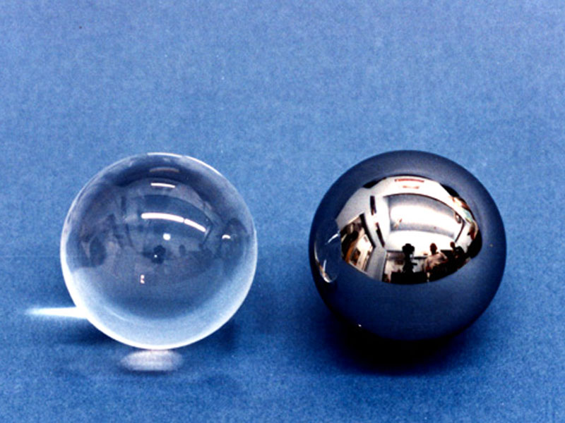
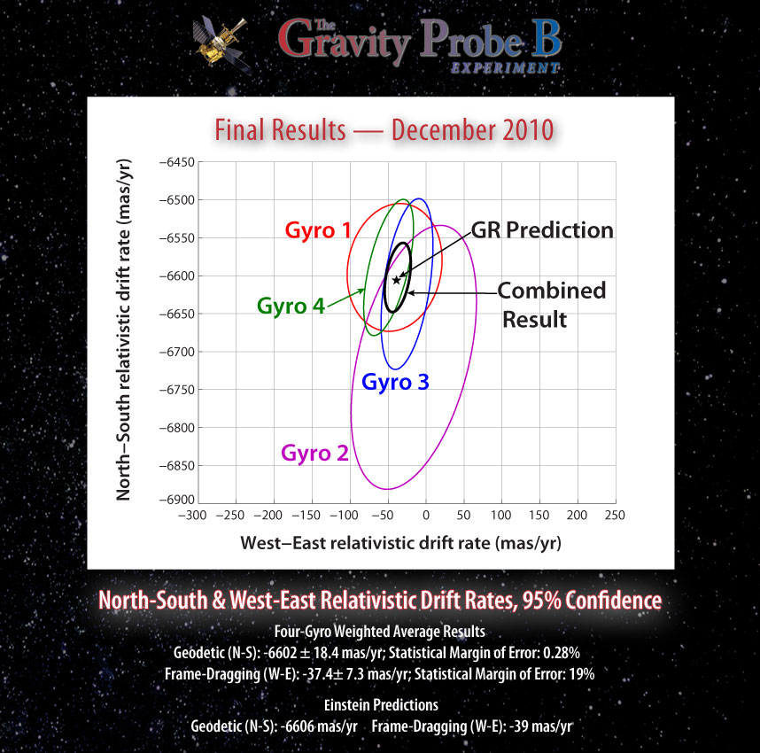

Gravity Probe B (GP-B) was a landmark physics experiment developed by NASA and Stanford University to test two key predictions of Albert Einstein's general theory of relativity: the geodetic effect and frame-dragging. Launched in April 2004, GP-B used ultra-precise gyroscopes to measure tiny changes in the direction of spin, caused by the curvature of space and the rotation of Earth.

The Gravity Probe B satellite before its launch
The mission aimed to directly observe the effects predicted by general relativity:

Diagram regarding the confirmation of Gravitomagnetism by Gravity Probe B
GP-B was equipped with some of the most precise instruments ever built for space research. The probe's gyroscopes were nearly perfectly spherical and polished to incredible precision. To ensure accuracy, the spacecraft also operated in a drag-free orbit, using sensors and micro-thrusters to counteract any external forces that could disturb the measurements.

Gyro rotors-uncoated fused quartz (left) and coated with niobium (right)
After years of data analysis, the Gravity Probe B team confirmed Einstein's predictions with remarkable precision:
These results not only validated aspects of general relativity but also showcased the effectiveness of advanced technologies in experimental physics. The success of GP-B contributes to our understanding of how gravity interacts with space and time, laying groundwork for future experiments in gravitational physics.

Results Graph of Gravity Probe B
Gravity Probe B was a groundbreaking experiment designed to test two fundamental predictions from Einstein’s theory of general relativity:
geodetic effect and frame-dragging. The geodetic effect measures how massive objects such as the Earth curve spacetime, and frame-dragging
describes how massive spinning objects twist spacetime as they rotate affecting the orientation of other nearby spinning objects. To measure
these subtle effects, scientists and engineers spent four decades researching and engineering ultra precise equipment. Perhaps the pinnacle
of this was the ultra-precise gyroscopes that tracked GP-B’s orientation against a guide star.
This project’s technological achievements were unprecedented. Engineers designed the gyroscope rotors to overcome interference from atmospheric
drag and magnetic fields. To this day these rotors remain the most perfectly spherical objects ever manufactured with a surface variation of
less than 40 atoms, creating a nearly perfect sphere. To ensure pure gravitational measurements, they also created a drag-free control system
that allows the satellite to follow an orbit determined purely by gravitational forces. This allowed the gyroscopes to achieve incredible precise
measurements to maintain a spin axis alignment within 0.0001 arcseconds. To further drive this home, one arcsecond is equal to 1/3600th of a degree,
meaning it maintained alignment with its star with less than a millionth of a degree.
After years of analyzing the data, the results were clear. The team measured the geodetic effect to within 0.28% of Einstein's prediction, while their
frame-dragging measurements came within 19% of what he proposed. But the results did more than just confirm what Einstein had predicted. For the first
time, scientists could measure how massive objects warp the fabric of space-time. This bridged a crucial gap, turning theoretical physics into observable
fact. Beyond just its scientific achievements, GP-B’s technological innovations still influence modern satellite engineering and precision measurement techniques.
The mission shows us how careful experimental design can test even the most complex concepts in theoretical physics.